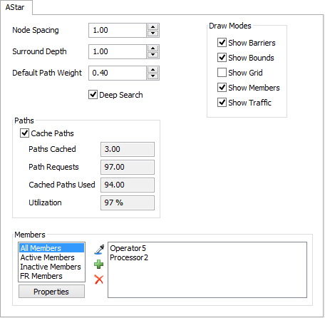
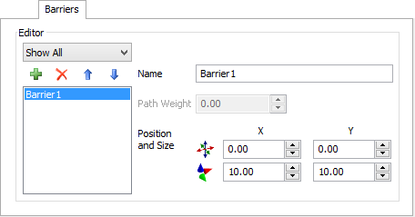
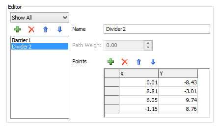

- Click to enter "Sample" mode then click on an object in the model to add as a member.
- Click to enter "Sample" mode then click on an object in the model to add as a member.
Node Spacing - This is the distance (in model units) between nodes in the A* Navigator's grid. Smaller spacing will allow travel members to move more smoothly and direct, however, more nodes will require more processing time to calculate paths.
Surround Depth - This number specifies the number of nodes that are placed around the outside of the navigator's outer most barriers. This number must be an integer and be greater than 0
Default Path Weight - This is the default path weight for preferred paths. Any newly created preferred paths will be given this value for their path weight.
Deep Search - When checked, the algorithm will perform a deep search when calculating travel paths. For more information on deep search see Concepts - Deep Search.
Toggle draw modes on or off. For more information on draw modes see Concepts - Draw Modes.
Cache Paths - When checked, the A* Navigator will cache paths to be reused in order to save processing time.
For more information on cached paths see Concepts - Cached Paths.
Status - Select which member lists to view.
Properties - Open the properties window of the selected member.
- Click to enter "Sample" mode then click on an object in the model to add as a member.
 - Click to open an object selection window and choose objects to add as members.
- Click to open an object selection window and choose objects to add as members.
 - Remove the selected member.
- Remove the selected member.
Members List - Displays all of the objects at the currently selected status.

Filter Barriers - Select a barrier type to filter the Barrier List.
- Add a barrier, divider, one-way divider or preferred path.
- Remove the selected barrier.

 - Reorder the selected barrier up or down in the list.
- Reorder the selected barrier up or down in the list.
Barriers List - Displays the A* Navigator's barriers.
Name - The name of the barrier. This has no affect on the model, but is for the modeller's convenience.
Path Weight - Preferred Path's only. This is the path weight added to the nodes associated with the path.
Position and Size (Barriers) - Specify the size and position of the barrier.

Points (Dividers/One-Way Dividers/Preferred Paths) - Define x,y positions of each point.
- Add a point to the end.
- Remove the selected point.
- Reorder the selected point up or down in the list.